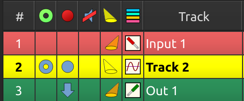

Pistas solistas
La funcionalidad “solista” (track soloing) le permite escuchar una pista mientras silencia a las otras, sin tener que silenciarlas una a una (Ver atributo “solo” en pistas).
Solo fantasma
Para hacer solista a una pista y silenciar otras, MusE emplea la función de ‘solo fantasma’ (Phantom soloing): cuando una pista es solista, MusE hace automáticamente solistas a todas las pistas enrutadas hacia y desde esta pista. (Ver rutas). Una pista fantasma en solo se indica en la columna de solista (solo) del panel de pistas. (Ver atributos de pistas).

Cadenas de solos
Cuando una pista de salida de audio envía audio a alguna entidad externa, como ser una aplicación externa en ejecución, y el audio de esa entidad externa se retroalimenta a una pista de entrada de audio de MusE, las cadenas de solo (Soloing chains) le permiten poner en solo la entrada o salida, y MusE completará el camino aislando automáticamente al otro y todas las rutas que vinieron antes o después de él.
Las cadenas de solo también funcionan con pistas MIDI encadenadas a entradas de audio: cuando una pista MIDI activa algún dispositivo externo MIDI cuyo audio se alimenta a MusE, las cadenas de solo permiten que toda la cadena sea solista.
Acceda a las “cadenas de solo” a través de los menús de enrutamiento. (Ver rutas de cadenas de solos).